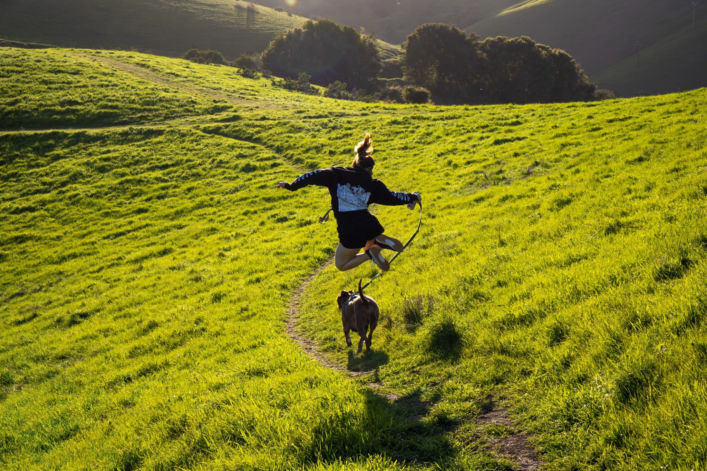

About Lauren
I photograph what makes me pause.
My work begins with exploration rather than a checklist. I am drawn to Northern California’s changing landscapes, old trees, working towns, wildlife, weather, and the small scenes that appear while moving through an ordinary day.
I do not believe meaningful photography requires constant travel to famous destinations. Sometimes the most important thing is simply stepping outside with enough curiosity to notice what is already there.
The aim is not only to share beautiful photographs. It is to encourage another person to explore, pay attention, care for what they find, and return home feeling a little lighter.
